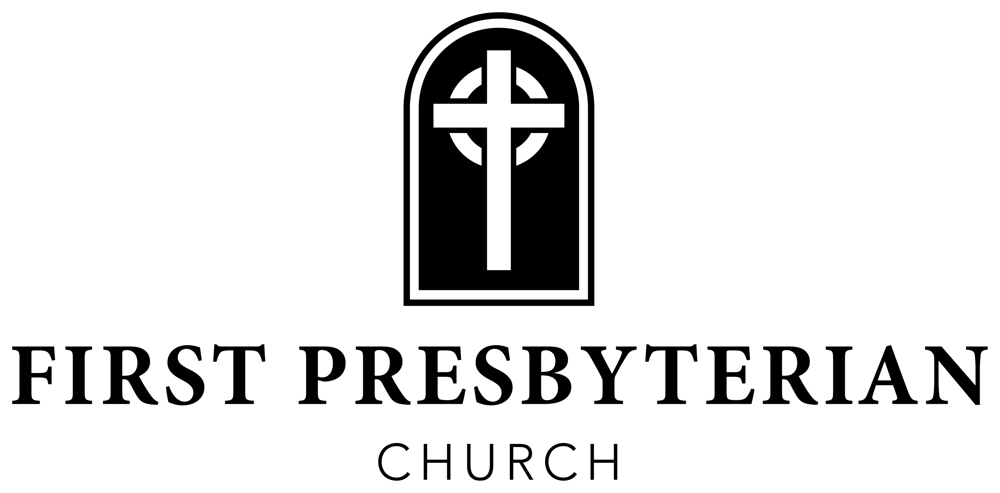

Flower Dedication
The flowers are given today by Joshua and Brittany Bryant with gratitude for our children’s ministry leaders and volunteers.
Announcements
We Rejoice with Ben & Jacy Albarracin, who were united in marriage on July 18, 2026. Please join us in thanking God for His faithfulness to them and praying He would richly bless their new life together.
You’re Invited! If your age/stage could be classified as empty-nester, senior, grandparent-era, or mature, please join us for lunch on Wednesday, July 29 at Pizza Grocery at 11:30 a.m.! Please call or email the office to let us know you’re coming.
Men’s Intensive 3 (MI3): A Better Way to Live — begins Thursday, August 13. Register today! A 7-week commitment to pre-read material and show up on 7 Thursdays at 6 a.m. for 7 conversations with 7 other men you should know but may not. Open to all men in Corinth. Register at MI3Corinth.eventbrite.com or scan the QR code.

Scan to register
Those Who Serve Today
Assisting Elder — Dr. Micah Monaghan
Greeters — Carson & Abbie Butler
Acolytes — Jack Windsor & Reid Butler
Ushers — Nate Alexander, Billy Scott Blackwelder, Bob Moore, Brian Thomas, & Spencer Lee
Nursery — Deborah Kiddy, Laura Kate Carmichiel, Sallie Kate Williams, Ashley Majors, & Brittany and Joshua Bryant
AV Engineer — Russell Smith
Church Staff
Rev. Waring Porter - Pastor
Gregg Parker - Dir. of Discipleship
Bobby Capps - Dir. of Outreach & Care
Jennifer Shipp - Dir. of Student Ministries
Laura Kate Carmichiel - Dir. of Women’s Min. & Comm.
Phyllis Sellers - Day School Director
Jan Pike - Choir Director
Malachi Doren - Accompanist
Teresa Tsagarakis - Administrative Assistant
Sammy Allred - Bookkeeper
The Church Calendar
July 27 First Day of School (Corinth) · Back to School Prayer, 8 a.m. at the Pavilion
July 29 Luncheon at Pizza Grocery, 11:30 a.m. — empty-nesters and up
August 2 Session Meeting
August 5 Kids Quest Restarts
August 9 Deacons’ Meeting
August 10 Youth Bible Studies Restart
August 12 Wednesday Night Youth Restarts
August 13 MI3 Begins
August 14–15 Officer Spouse Retreat
Online Giving

Scan to give online
919 East Shiloh Rd · Corinth, MS 38834 · fpccorinth.org · 662-286-6638

July 26, 2026
Ninth Sunday after Pentecost
“To be disciples, to make disciples”